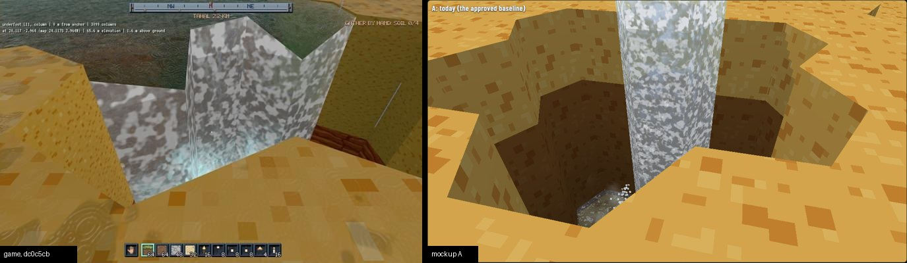

The third try at how a waterfall looks, in a mockup before any game code (owner, 2026-11-15: make mockups from now on for how we're gonna do the waterfall part so you dont mess it up in game, we've done this twice now
, lets make sure third time is the right one
).
The game's test case: a source poured beside a pit dug 9 layers deep (the cell and the six round it), its water falling into the pit, and a 2-layer step on the terrace beside it. Cells are the game's: 2.833 m across, 1 m layers. Drag to turn, wheel or pinch to come closer. The water moves; nothing else does.
all the afters are bad,
dont do that.
too smeared, theres also a geometric gap at the edge.
go back to these shaders: the blotched froth of dc0c5cb (variant A).
I said stretched out, like maybe 2x of the original(variant B).
the wall should be skewed: the sheet leans out from the lip (variant C), with no gap where the top meets it.
can we have the edge transition into froth? and somehow show that it is speeding up in velocity/flow in to the wall, gently (variant D).
The froth noise, its coordinates and constants, the water's colour terms and the face kinds are the game's (assets/shaders/water.wgsl at dc0c5cb). The ground, the sky, the lamps and the splash are the page's own stand-ins. The night scene is lit by three lamps; each lights the ground, the water and the spray near it.
The game's screenshot (left, the approved look, docs/screenshots/water-flow/owner-fall-froth-rain-before-after.jpg, top right) beside variant A from about the same place (right).

gnoise3 (Tenebris's lattice hash, bit for bit in integer maths), the same body-frame tangents, the same 5 / 0.35 / 5 scales, 0.6 s-1 drift, threshold 0.42 to 0.7, weights 0.75, 0.15, 0.12, cap 0.92 and the mesher's froth weight (1 on the lip and foot layers, 0.55 between). The blotches read at the same size and coverage as the game's: grey-white, roughly round, a few tenths of a metre, streaming down.0.35 term meant to stretch it adds about 0.1%. The streaks the shader meant to draw come out as round blotches, and that is the look that was approved. B stretches that real look.Each variant changes one or two lines of the fall's froth in water.wgsl (the in.kind == 2u && horizontal < 0.5 branch) or the mesher in water_flow.rs. The full table is in openspec/changes/water-flow/design.md, "The fall look, in a mockup first".
| Variant | Game change |
|---|---|
| A | None: dc0c5cb as it is. |
| B | Before the froth's along: down_p = advected - radial*(dot(advected - lip, radial))*(1 - 1/FALL_STRETCH), the height below the lip divided by FALL_STRETCH (2.0). Scroll speed multiplies time in the froth's two time terms (1.0 is today's). |
| C | B, plus the mesher moves each falling face's vertex out along the flow by lean * profile(depth / drop) (profile (sqrt(u + 0.05) - sqrt(0.05)) / (sqrt(1.05) - sqrt(0.05))), every face's row at one depth moved alike, and nothing above the lip's ground moved. The froth is read at the unmoved position (one more vertex attribute), so the pattern is B's, bent. |
| D | C, plus: the froth is read on one frame per fall (the face toward the flow), at the point where the flow leaves the falling cell; the top's last 1.5 m gets the same froth ramped in; and the path below the lip is warped to time of flight from 1 m/s under 3 m/s2, mixed by the slider. |
A: today, the approved baseline. The game's fall froth at dc0c5cb, ported line for line: blotches of white water streaming down each falling face, denser on the lip's and the foot's layers. Nothing to set.
B: the original froth, stretched down the fall. I said stretched out, like maybe 2x of the original
. The same pattern as A, read with the height below the lip divided by Stretch (2.0 by default, 1 is A). Speed scales how fast it streams down (1.0 is the game's; stretched, it covers twice the ground in the same time, as a stretched film would).
C: B, leaning out from the lip. the wall should be skewed
. The sheet is pushed out along the flow by Lean metres at its foot, steepest just under the lip, as water thrown off an edge falls. 0 is today's straight drop. The top and the sheet share the lip's vertices, so no gap opens there; the sheet's sides pull away from the pit wall as a real curtain does. The froth is B's pattern, bent with the sheet.
D: C, with froth into the edge and a gentle speed-up. can we have the edge transition into froth? and somehow show that it is speeding up in velocity/flow in to the wall
. Lip + speed-up sets both: the top whitens over its last 1.5 m before the edge, with the same froth that then goes over and down as one pattern, and the froth speeds up as it falls, so its blotches lengthen lower down. At 0 this is C (on one frame per fall).